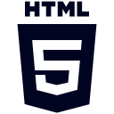
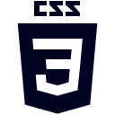
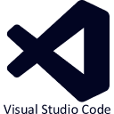

Опыт в разработке веб-страниц с использованием HTML5, где простая разметка превращается в код.
Стремлюсь к гармонии между функциональностью и чистотой структуры, делая код не только рабочим, но и понятным.
Увлечен изучением современных стандартов и придаю особое внимание деталям, чтобы создавать не просто веб-страницы, а эстетичные и понятные проекты.

Владею основами CSS3, в том числе применением Flexbox для построения базовых макетов.
Активно изучаю тонкости работы с Margin и Padding, стремясь к точному контролю визуального оформления элементов.
На данный момент фокусируюсь на углубленном изучении Flexbox, Grid и адаптивной верстки, чтобы расширить свой инструментарий для создания более сложных и современных веб-проектов.

Неотъемлемая часть моего процесса веб-разработки.
Благодаря многочисленным расширениям и поддержке различных языков программирования, я могу уверенно и эффективно создавать и оптимизировать код.
Постоянно открываю для себя новые возможности VS Code, чтобы быть в курсе последних тенденций в мире разработки.
С помощью этого инструмента я могу эффективно взаимодействовать с дизайнерами, анализировать макеты и облегчать процесс верстки.
Гибкий интерфейс и возможность работать в облачном пространстве делают Figma ценным активом в моем инструментарии, помогая мне лучше понимать дизайн-концепции и быстрее воплощать их в жизнь.